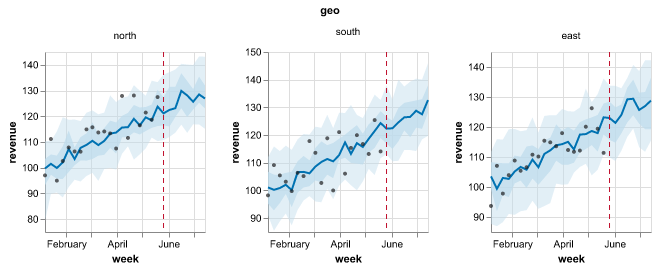
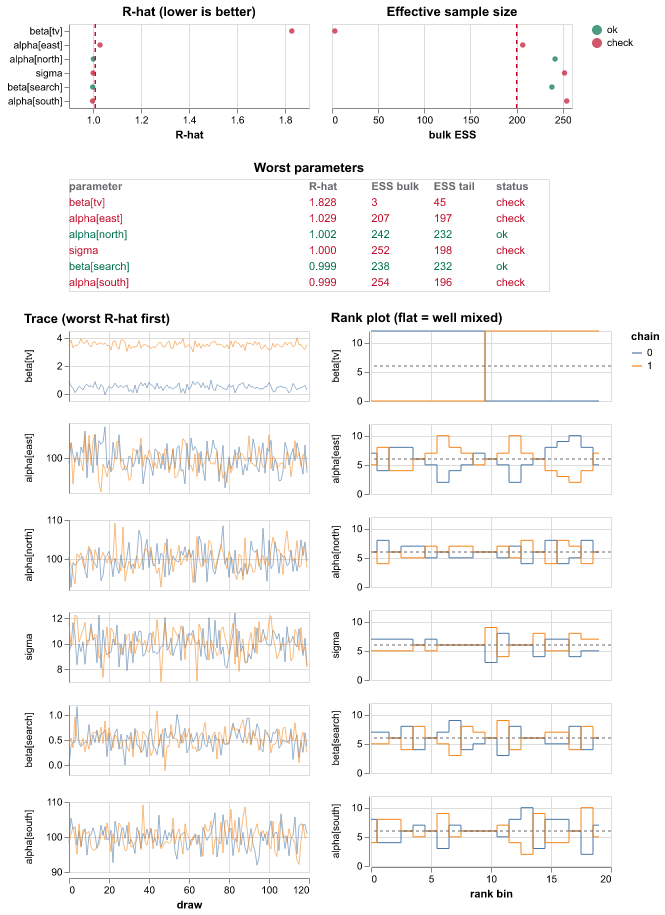
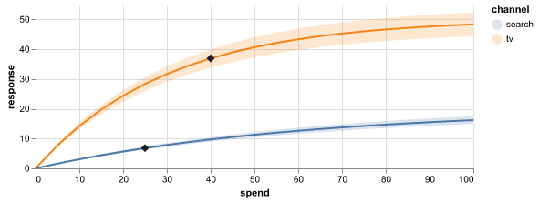
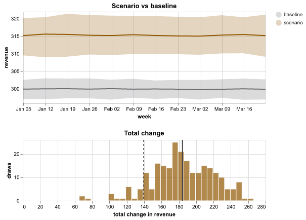
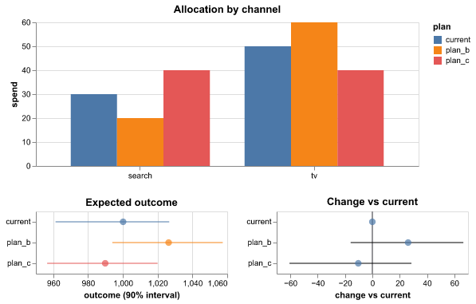

Each model that you fit gets a set of standard plots at no cost. The set includes a data
overview, convergence, posterior predictive checks, a fan of the fit and forecast, decomposition,
scenario comparisons and more. Plots are Vega-Lite (or Plotly for 3D, maps and
animation). A small envelope, the PlotSpec, contains each plot. The data goes next to the spec
as named Arrow tables, never as a URL. Each plot goes through a sanitizer before a person sees it.
uv add "mapi-plots[recipes]" # recipes + Altair/Plotly helpers (runner images, notebooks)
uv add mapi-plots # sanitizer and templates only (JSON in, JSON out)

Render a recipe in a notebook¶
A recipe is a function. It changes a fitted bundle or a score output into a PlotSpec:
from mapi_plots.examples import example_inputs
from mapi_plots.recipes import get_recipe
inputs = example_inputs() # synthetic bundle/score trees for every recipe (xarray only)
data, options = inputs["core.ppc_fan"]
plot = get_recipe("core.ppc_fan").render(data, **options)
print(plot.kind, plot.persona) # vega-lite both
print(sorted(plot.datasets)) # named Arrow tables travel next to the spec, never as URLs
print(plot.caption_plain[:60], "...")
A recipe accepts different inputs:
- An
xr.DataTree(a bundle or a score output) - An
xr.Dataset - A plain
{"group": Dataset}mapping
A recipe finds its groups at the root, under model/ (for bundles) or at other positions in the
tree. The recipe does a check of its options. If an option is unknown or a group is missing, the
recipe raises a typed RecipeDataError (SCHEMA_INVALID). The error tells what the recipe
expected.
Each plot contains these items:
persona:guided(analysts),expert(data scientists) orboth.caption_plain: a description of the chart in plain language, with the actual numbers. For example: "The scenario changes total revenue by 184 (90% interval 139 to 251) compared with the baseline. Probability of an increase: 100%."provenance: the recipe and its version, the bundle id and a timestamp.
Try each recipe without a model
mapi_plots.examples.example_inputs() returns synthetic bundle trees and score trees for
each recipe. It makes them with xarray only:
The standard catalog¶
| Recipe | What it shows | Reads |
|---|---|---|
core.data_overview |
Each variable over time for each group, a heatmap of missing values, the group sizes | raw data / observed_data |
core.prior_predictive |
The datasets that the model makes before it sees data, compared with your data. Also a prior fan. | prior_predictive, observed_data |
core.convergence |
R-hat and ESS for each parameter, a table of the worst parameters, trace plots and rank plots, divergences | posterior, sample_stats |
core.posterior_forest |
The median, the 50% HDI and the 94% HDI for each parameter. One panel for each variable. | posterior |
core.ppc |
Predictive densities compared with observed values, a PIT histogram, interval coverage | posterior_predictive, observed_data |
core.ppc_fan |
A fan of the fit and the forecast, with the line between the training data and the forecast | draws or summary, observed |
core.fit_vs_actual |
Predicted values against actual values, with R² and MAPE | predictions + observed |
core.residuals_over_time |
Actual values minus predicted values over time | predictions + observed |
core.decomposition |
Stacked contributions over time, and the total share of each component. A part that the model marks as not additive (a trend slope) is not in the stack. | contributions, decomposition or components |
core.model_comparison |
The elpd of each model and the difference to the best model (PSIS-LOO table or WAIC) | comparison, or one child for each model with log_likelihood |
core.counterfactual |
The scenario compared with the baseline over time, and the distribution of the total change | draws/summary, baseline/…, delta/… |
core.decision_distribution |
The distribution of a decision objective for each option, and P(best) | decision/objective |
core.pair |
A grid of the draws of each pair of parameters, a histogram of each parameter, divergent transitions in red | posterior, sample_stats |
core.ridge |
One density curve for each level of a dim (such as each group), sorted by the mean, with HDI bars | draws in posterior, predictions or posterior_predictive |
core.rank_matrix |
The probability of each rank for each item, and the probability that one item is above another | draws in posterior, predictions or posterior_predictive |
core.calibration |
The PIT-ECDF difference with a simultaneous band, or a reliability diagram for 0/1 targets. For 0/1 targets, one predicted probability for each row is sufficient. | draws or point probabilities, observed_data |
core.state_sequence |
The observed series above the stacked probability of each hidden state over time | hidden_states, regimes, a score summary, state draws; observed_data |
core.roc_pr |
The ROC curve and the precision-recall curve of a binary or multiclass target, with the AUC and the average precision (multiclass: one curve for each class and the macro AUC) | draws or point probabilities, observed_data |
core.confusion |
The table of actual and predicted classes, for a binary or multiclass target: 2 × 2 at one threshold, or K × K of the most probable class, with accuracy and F1 | draws or point probabilities, observed_data |
core.loss_curve |
The loss of each step of a fit (for example ADVI), raw and smoothed | fit_history or metrics_history |
core.loo_pit |
The LOO-PIT check of calibration and the Pareto k of each observation | log_likelihood, posterior_predictive, observed_data |
core.energy v0.12 |
The marginal energy and the energy transitions of the sampler, and the BFMI of each chain against a threshold | sample_stats with energy |
core.prior_posterior v0.12 |
The prior and the posterior of each parameter, ranked by how much the data moved it, with their overlap | prior, posterior |
The marketing-mix pack (mmm.*) adds these plots:
- Response curves that mark the current spend
- The marginal cost (or the marginal ROI) for each channel
- A comparison of budget plans
- A channel decomposition
- Your beliefs and the priors (
mmm.prior_beliefs): the range that you gave for each channel, next to the values that the model allows before it sees your sales
From v0.12, the pack also has these plots:
| Recipe | What it shows | Reads |
|---|---|---|
mmm.roi |
The return on spend of each channel with a range, and the marginal return (mROAS), against a break-even line | response_curves, optional marginal_cost |
mmm.adstock |
The part of the effect of spend that comes in each later period, with a range and the mean delay | adstock |
mmm.waterfall |
The contribution of each component (baseline, trend, channels) to the total result | contributions |
mmm.spend_effect |
The share of spend against the share of the effect of each channel | response_curves |
mmm.lift_tests |
The result of each lift test with its error bar, next to the estimate of the model | lift_tests |
mmm.effectiveness |
The effect of one unit of spend over time, for time-varying channels | effectiveness |
mmm.mediation |
The direct and the indirect effect of each channel (mmm.nested) |
mediation |
mmm.cross_effects |
The effects between the results (mmm.multivariate) |
cross_effects |
mmm.decomposition and mmm.waterfall show one outcome of a model with an outcome dim:
the primary outcome, or the outcome that you set in outcome.
The causal pack (causal.*, v0.13) draws the results of the
causal models:
| Recipe | What it shows | Reads |
|---|---|---|
causal.impact |
The actual values and the values without the change (with a range), the effect in each period and the cumulative effect | impact |
causal.pre_fit |
The fit of the model before the change, with its error | impact |
causal.donor_weights |
The weight of each market in the synthetic control, with a range | donor_weights |
causal.event_study |
The effect for each period before and after the change, with a range | event_study |
The tabular pack (ml.*) adds ml.feature_importance. This plot shows ranked tree
importances, or signed coefficients for linear estimators. It reads them from the groups that
the scikit-learn plugin and the xgboost plugin keep in their bundles. From v0.15, the pack also has
three plots for neural networks (see Deep learning).
The science pack (sci.*) draws gridded fields and images (sci.field_map,
sci.image_residuals, sci.ppc_image_grid, sci.power_spectrum), areas on a map
(sci.area_map), trees (sci.phylogeny), angles (sci.rose), colours (sci.swatches),
points with error ellipses (sci.point_pattern) and profiles and ensembles of curves. The
network pack (net.*) adds net.graph, a node-link drawing and an adjacency matrix of an
edge variable. The plot reference lists the settings of each recipe.




Plots for classifiers, training and states¶
These plots read the outputs of more model types:
- 0/1 targets.
core.calibration,core.roc_prandcore.confusionaccept draws or one probability for each row. Thus they apply to a Bayesian model and to a scikit-learn classifier. The larger of the two target values is the positive class. To change it, setpositive. - Three or more classes v0.14.
core.roc_prandcore.confusionalso accept a prediction with a class dim (the probability of each class, for example fromsklearn.multiclass_classifierortabular.image_logistic), or an actual target with more than two values.core.roc_prthen draws one curve for each class against all other classes (the 12 most frequent classes, or the classes inclasses). Its title gives the macro AUC.core.confusionshows a K × K matrix of the most probable class (a maximum of 30 classes) with the accuracy and the macro F1.thresholdandpositiveare not used. The caption tells you this. - Fits in steps. An ADVI fit keeps its loss in the
fit_historygroup. The fit run addscore.loss_curveto the plots of that fit. If the loss still goes down at the end, the caption tells you to use more steps. - Hidden states.
core.state_sequencereads thehidden_statesgroup of the HMM and theregimesgroup of the Markov switching model. If the data has more than one series (for example one series for each animal), the plot shows the first series. The caption names it. To show a different series, setselect. - Pareto k.
core.loo_pitshows which observations make the LOO estimate unreliable. It is not a default plot. Add it in the plot builder or in theplotslist of a model.
Deep learning v0.15¶
The dl models of mapi-jax keep their training history in the bundle. The fit adds these
plots to the run:
| Recipe | What it shows | Reads | Settings |
|---|---|---|---|
ml.training_curves |
One panel for each metric (loss, accuracy or error, up to 4), one line for each split (train and val, val with points). The caption gives the best validation value. It also tells you when the validation loss goes up while the training loss goes down: "The validation loss goes up while the training loss goes down: the model starts to overfit." | metrics_history with the label split, else training |
keys, label (split), x (step or epoch), smooth, log_y, max_points (2000) |
ml.confusion_epochs |
The confusion matrix of the validation data at up to 6 epochs: the first, some epochs between, the best and the last. The caption gives the validation accuracy at the first, the best and the last epoch. | training.confusion |
epochs, normalize (true or none), max_classes (20; the others are "(other)") |
ml.misclassified |
A grid of the validation images that the network classifies incorrectly, with "true → predicted (p=0.83)" above each image. The caption: "{n} of {N} validation images are wrong at epoch {e}." | misclassified |
max_items (24), columns (6) |
The fit adds a recipe only when the bundle has the group that the recipe reads. The labels
of the images are untrusted text: the plots show them as text only. ml.misclassified
draws the pixels as Plotly image traces, with no image URLs.
Recipes obey the representation of each output. If a dim must go, a recipe adds the joint
draws. A recipe never adds quantiles or intervals. If a summary has an extra dim, the recipe
tells you to request an aggregated output. The recipe shows summed means without a band.
Predicted-vs-actual plots and residual plots never need a total. Thus they compare these
summaries cell by cell (one dot or line for each store × sku, with the color of the facet dim).
The plots that a run draws v0.10¶
A fit draws only the plots in outputs.plots of the spec. Each model declares its
standard plots, and the Insert panel of the spec editor shows them first. Some
examples:
| Model | Standard plots |
|---|---|
| scikit-learn regressors (also the quantile, bootstrap and conformal plugins) | core.fit_vs_actual, core.residuals_over_time, ml.feature_importance |
sklearn.tabular_classifier |
core.calibration, core.roc_pr, core.confusion, ml.feature_importance |
ts.gaussian_hmm, the statsmodels Markov switching model |
core.state_sequence |
The unobserved components model, ETS, ts.hsgp_trend |
core.decomposition |
The fit also adds some plots when the bundle has their data: core.loss_curve after an ADVI
fit, and the deep learning plots after a dl fit.
A score run picks its default plots from the shape of each output. job.plots of the
request replaces the defaults.
| Output | Default plot |
|---|---|
An output with a grid |
sci.field_map, with the frame dim (for example quarter) as the slider |
An output with a grid and a component dim of size 2 |
sci.vector_field |
| An output on the areas of a map | sci.area_map |
Probabilities over a state or regime dim |
core.state_sequence |
| Evaluate | core.fit_vs_actual, and core.residuals_over_time when an output is over time |
| Evaluate, a 0/1 target | core.calibration, core.roc_pr and core.confusion, in place of core.fit_vs_actual and core.residuals_over_time |
| An output over time that is not a grid (predict and forecast) | core.ppc_fan |
| A counterfactual | core.counterfactual |
A model with grid or area outputs gets the fan only when it also has an output over time that is not a grid. A fan of a map adds all the cells, thus it does not help. The run page shows the plots of a run in its Plots card. See The Expert web app.
Plots are different from the images that a run logs (ctx.log_image). The Media tab of
the run shows the logged images. See
Log images, figures and tables.
Find a recipe in the web app¶
The Plots tab of the Catalog shows a card for each recipe, with an example plot made from synthetic data. The buttons above the cards filter the recipes by pack:
- All plots
- All models (
core.*) - Marketing mix (
mmm.*) - Machine learning (
ml.*) - Science (
sci.*) - Networks (
net.*)
A pack shows only when the catalog has a recipe of that pack. A pack without a name in this
list, for example the causal pack, shows its prefix (causal) as the label. Type words in the
search field to find a recipe by its id, title or About card. Click a card to see the About card and a larger
example.
Plots in a workflow¶
A workflow can draw a recipe with the node plot.render. Set recipe to the id (for example
sci.field_map) and, if necessary, settings and source (auto, data, model or
predictions, default auto). model.forecast and evaluate.residuals also give plot
outputs. A report.summary can show the plots in its plots input. The server puts each plot
through the sanitizer. A plot that is not safe fails its node with PLOT_UNSAFE. See
Score a model and draw plots.
The plot sandbox applies the theme to polar plots (barpolar and scatterpolar), for example
sci.rose.
Bring your own chart¶
Two more ways since v0.18
- No code: a chart template restyles the data of a platform chart with your own Vega-Lite spec, made in Make your own › Charts with a live preview. It shows on run and model pages under "Your charts".
- A recipe in a plugin:
mapi plugin init acme --kind recipescaffolds a recipe with a settings form, a catalog example and thecheck_recipekit. See Develop a plot recipe.
Make the chart with Altair or Plotly as usual. Then put it in an envelope:
import altair as alt
import pandas as pd
from mapi_plots import from_altair
frame = pd.DataFrame({"week": pd.date_range("2026-01-04", periods=6, freq="W-SUN"),
"revenue": [10.0, 12.5, 11.0, 14.2, 15.1, 13.8]})
chart = alt.Chart(frame).mark_line().encode(x="week:T", y="revenue:Q")
mine = from_altair(chart, id="acme.revenue", caption_plain="Weekly revenue.")
print(list(mine.datasets)) # the inline data became a named dataset
import plotly.express as px
from mapi_plots import from_plotly
fig = px.scatter(frame, x="week", y="revenue")
theirs = from_plotly(fig, id="acme.scatter") # typed arrays -> named Arrow datasets
print(list(theirs.datasets)) # one dataset per trace, referenced as {"$ref": "trace0.y"}
from_altairmoves the inline data of Altair (and alldata.values) into named Arrow datasets. It also writes the references again. The function fills named data (alt.Data(name="pts")) fromdatasets={"pts": frame}.from_plotlydecodes plotly.py 6 typed arrays ({"dtype": "f8", "bdata": ...}) into Arrow datasets, one for each trace. It binds them with{"$ref": "trace0.y"}. The function removes the default plotly.py template, because the renderer applies the theme to plots. To keep the template, setkeep_template=True.
Both functions run the sanitizer. If the chart breaks a rule, they raise a SanitizeError.
from_plotly also removes HTML from the strings that it moves into datasets (see below).
Colors and dark mode. An explicit mark color has priority over all themes. Thus the platform
recipes use only colors from mapi_plots.palette (for example OBSERVED, ESTIMATE, BAND,
ALERT). In dark mode, the plot sandbox replaces each palette color with its dark variant. Each
stroke, dot and text color keeps a contrast of 3:1 or more on the two card backgrounds. To get
the same behavior in your own charts, use the palette. The plot shows all other colors as
written, in the two themes.
Role- and dim-bound templates¶
A template binds channels to roles and dims, not to the variable names of one model. Thus a plot of "the target over time, one line for each geo" applies to all models of a family:
import numpy as np
import pandas as pd
import xarray as xr
from mapi_plots.recipes import builtin_templates, render_template
weekly = xr.Dataset(
{"revenue": (("geo", "time"), np.random.default_rng(0).gamma(20.0, 50.0, (3, 12)),
{"role": "target", "units": "EUR"})},
coords={"geo": ["DE", "FR", "UK"], "time": pd.date_range("2026-01-04", periods=12, freq="W-SUN")},
)
tmpl = builtin_templates()["tmpl.target_over_time"]
print(tmpl.bindings) # x="dim:time", y="role:target", color="dim:geo" - no variable names
chart = render_template(tmpl, weekly) # the schema is inferred; roles come from attrs
one_market = render_template(tmpl, weekly.sel(geo="DE", drop=True), optional=["color"])
In a template spec, {"$bind": "y"} becomes a Vega-Lite field definition. The bound name
replaces "{{y}}" (also {{y.field}}, {{y.type}}, {{y.title}}). The kinds of binding are
dim:, role:, var:, coord: and stat: (a summary statistic, for example
stat:hdi_90_lower). The API runs the half that uses only JSON,
mapi_plots.templates.apply_template. It does a check that a saved template applies to a model
before the app renders a plot.
What the sanitizer allows¶
Plots run in an isolated iframe on a different origin. But the server does a check of each plot first:
| Rejected | Why |
|---|---|
url data (in all positions, also lookups and topojson) |
Data must have a name as its reference. The plot cannot fetch data. |
href encodings and mark properties |
The plot cannot go to other pages. |
image marks, url channels, layout.images / image traces with sources that are not data: |
The plot cannot fetch external data (only base64 PNG/JPEG/GIF/WebP). |
Tile-map traces and subplots (scattermap, choroplethmap, densitymap, layout.map) |
The tiles come from third-party servers. Use scattergeo/choropleth. |
__proto__, constructor, prototype keys or field paths |
Prototype pollution |
javascript:, data:text/html, SVG data URIs, CSS url() in a string |
Vectors for scripts and fetches |
Vega expressions that are not in a small allow-list of functions, method calls, window/document/fetch, computed member names |
Escapes from the expression sandbox |
Custom format types, Plotly network options (topojsonURL, showLink, ...) |
Hooks for code and the network |
| All items that do not agree with the pinned Vega-Lite v6.4.1 / plotly.js 4.1.1 schemas | Unknown keys are where exploits hide. |
Plotly text keeps only <b>, <i>, <br>, <sub> and <sup> (and <extra> in hover
templates). The sanitizer removes all other tags and reports each removal as a change. The server
never decodes Arrow. Thus the sandbox removes tags from the text that from_plotly moves into a
dataset (text, hovertext, category labels), and scans it, during conversion. The plot iframe
must also treat dataset strings as not trusted. It must remove the tags again before it gives the
strings to plotly.js.
Vega shows dataset strings as text, and the tooltip handler of the iframe escapes them. The
sanitizer does a check of the method args of Plotly buttons and sliders. It checks the
{attr: value} form and the positional [attr, value] form. It rejects usermeta.embedOptions
in Vega-Lite specs. Specs have limits on size, depth, node count and string length. For the full
list of rules and error codes, see the plots reference.
from mapi_plots import check_plot, sanitize_plot
from mapi_plots.sanitize import SanitizeError
hostile = {
"id": "evil.chart",
"title": "Totally normal chart",
"kind": "vega-lite",
"spec": {
"data": {"url": "https://attacker.example/steal.json"}, # fetches are not allowed
"mark": "point",
"encoding": {"href": {"field": "link"}}, # neither is navigation
},
}
try:
sanitize_plot(hostile)
except SanitizeError as err:
print(err.code, sorted(rule.value for rule in err.rules)) # PLOT_UNSAFE ['href', 'url_data']
for issue in check_plot(hostile): # editor-friendly: every problem, never raises
print(issue.pointer, "-", issue.message)
# /spec/data/url - data must be referenced by dataset name, never by URL
# /spec/encoding/href - href links are not allowed in plots
# /spec/$schema - added $schema